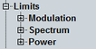

Limit Settings
The "Limits" section in the configuration dialog defines lower and/or upper limits for the modulation, spectrum and power results.
For details, see "Limit Settings and Conformance Requirements".

Limit settings
For limit configuration via remote commands, refer to the following sections: